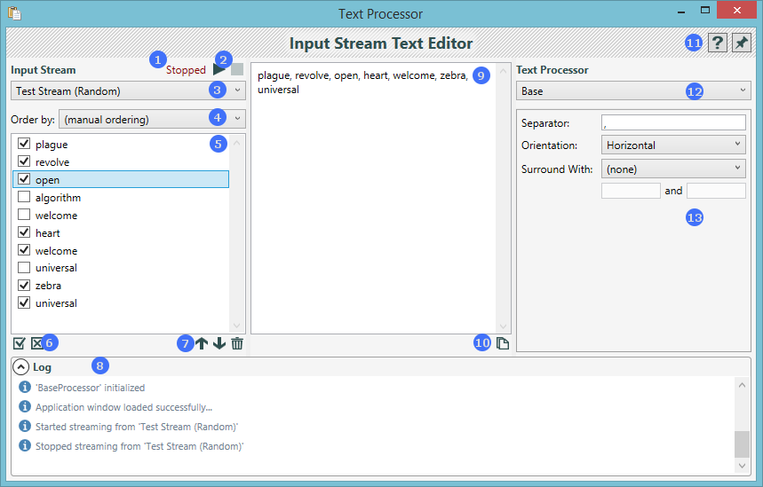

Introduction
Text Processor is a tool for manipulating text items in a systematic way. Text items are streamed to the application with the selected stream plug-in, for example, the Clipboard stream plug-in. These text items are then stinged together using one of the text processor plug-ins. The output will then be displayed where you can copy and use it.
Application Layout
The functionality of the application is split into three columns. The left-hand side is where you will see all the streamed text items, and where you control the selected stream. On the right-hand side, you control how the text items are concatenated together to form the output, which will be visible in the centre column.

- Input Stream Status - indicates the current status of the selected stream.
- Start and Stop - start streaming or stop streaming from the selected stream.
- Selected Stream - the drop down menu for selecting the stream that will be active.
- Ordering Method - specifies how the streamed text items should be ordered.
- Streamed Text Items - a list of streamed text items.
- Check/Uncheck All - shortcut buttons for checking or unchecking all the text items.
- Text Item Manipulation - commands for manipulating the text items in the list.
- Log - output console for inspecting application events.
- Output - the output produced by processing the text items.
- Copy Output - copies the output text to the clipboard.
- Tool Bar - application-level commands.
- Selected Text Processor - the drop down menu for selecting a text processor.
- Text Processor Options - the available options for the selected text processor.
Input Text Stream
The word "stream" refers to the source of the text items that will be processed. Streams are implemented throug plug-ins. All the available stream plugins will be visible in the drop-down menu.